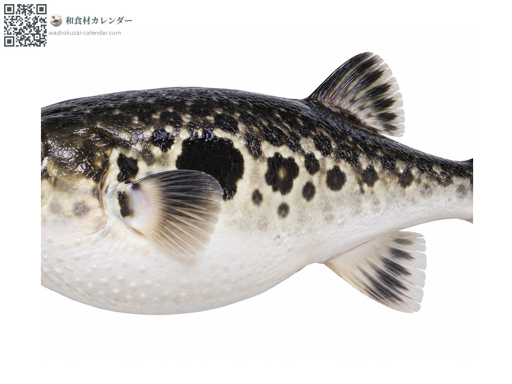
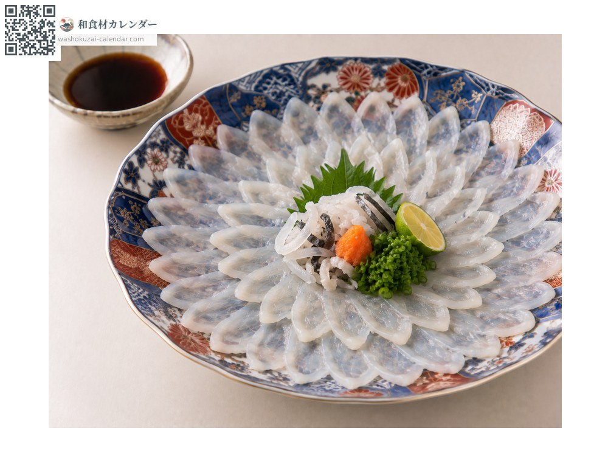
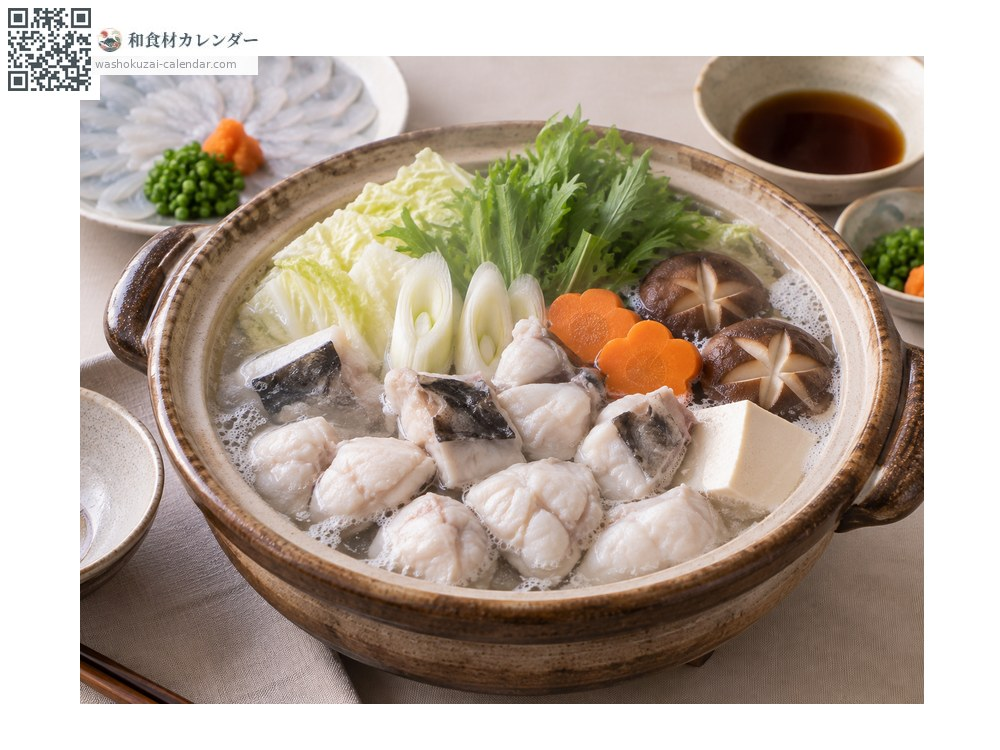
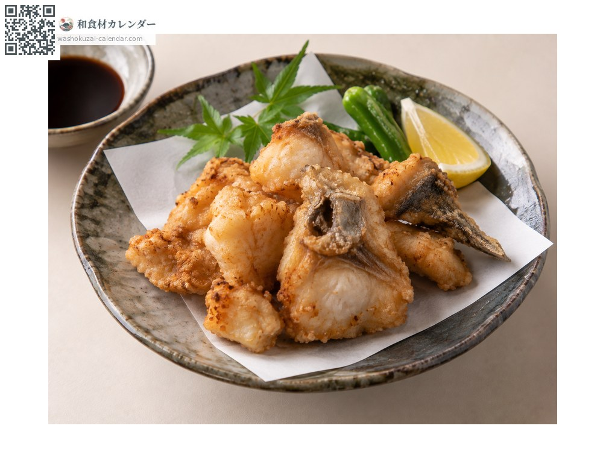
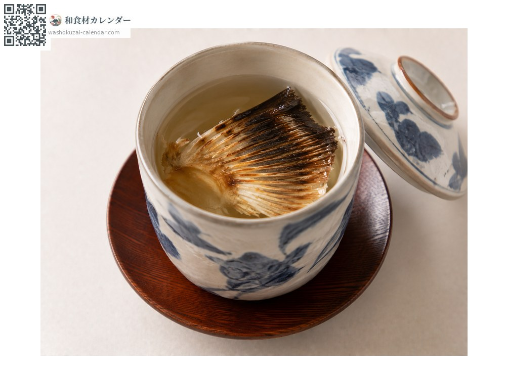

海鲜
虎河豚
トラフグ とらふぐ torafugu
别名torafugu、fugu
应季时期为1月、2月、11月、12月

应季时期
1月
2月
3月
4月
5月
6月
7月
8月
9月
10月
11月
12月
应季有供应
烹饪方法

河豚薄切生鱼片
切到能透出盘子花纹那么薄。

河豚火锅
做成火锅，骨头能熬出极好的汤头。

日式炸物（唐扬）
先腌过再油炸。

烤鱼鳍热清酒
把烤过的鱼鳍泡进热清酒。
挑选方法
鱼肉通透有弹性。请购买已处理过的。
保存方法
冷藏可放1至2天。薄切生鱼片当天食用。
主要产地
小知识
处理需要专门执照。山口下关是集散地。法律禁止未具资格者自行处理。白子（鱼精巢）是冬季特别珍贵的珍味，价格高昂。